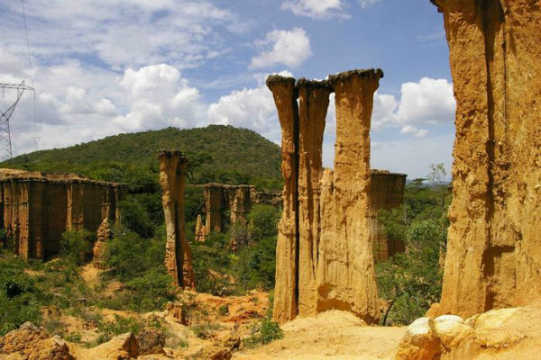

Mohamed Abdirahman

Machu Picchu

I would like to visit Machu Picchu for its breathtaking scenery, mysterious history, and ancient architectural wonders.
It offers a unique opportunity to explore the fascinating remnants of an ancient civilization while surrounded by stunning natural landscapes.
Additionally, the sense of mystery surrounding its purpose and construction adds to its allure, making it a truly unforgettable destination for adventurers and history enthusiasts alike.
It offers a unique opportunity to explore the fascinating remnants of an ancient civilization while surrounded by stunning natural landscapes.
Additionally, the sense of mystery surrounding its purpose and construction adds to its allure, making it a truly unforgettable destination for adventurers and history enthusiasts alike.
Foreign language
French is one of the foreign languages I would like to learn.
Learning French in Africa offers numerous advantages due to its wide usage across the continent, particularly in government, trade, and tourism sectors.
Proficiency in French opens doors to job opportunities and facilitates communication within Africa and internationally.
Additionally, it provides access to French-speaking cultures, literature, and media, enriching cultural understanding and global perspective.
| English | French |
|---|---|
| The only way to do great work is to love what you do. | La seule façon de faire un travail formidable est d'aimer ce que vous faites. |
| In the middle of difficulty lies opportunity. | Au milieu de la difficulté se trouve l'opportunité |
| Be the change that you wish to see in the world | Soyez le changement que vous souhaitez voir dans le monde |
| The future belongs to those who believe in the beauty of their dreams | L'avenir appartient à ceux qui croient en la beauté de leurs rêves. |
Historical Places in Africa

Telouet Kasbah, Morocco
The Kasbah of Telouet, near Marrakech, was once the residence of T’hami el Glaoui, the governor of Marrakech. It offers beautifully decorated rooms in Andalusian style, overlooking the Imarene River. Despite being incomplete and deteriorating in parts, guided tours for $2 provide insights into its history. Booking through travel agents is recommended.

Isimila Stone Age site, Tanzania
The Isimila Stone Age Site near Iringa holds archaeological treasures from early hominoids, including tools and bones. Guided tours, lasting about 3 hours, offer insights into early human and animal civilizations and feature beautiful granite rock reliefs. Tours, arranged through travel agencies, start early to beat the heat.